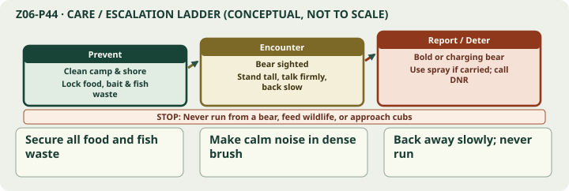

Z06-P44 · Hunting and fishing · New manuscript
Black Bear Encounter Avoidance and Attractant Control
Prevent black bear conflicts around fishing shores, camps, and game-processing sites through strict attractant discipline and calm response.
When it applies · Northern and central Minnesota forests, Boundary Waters, and bear-range shorelines.
Equipment · Bear-resistant food canister/locker, clean fish-disposal plan, bear spray where lawful and trained.

Actions
- Store all food, fish bait, coolers, cooking grease, and scented toiletries in bear-resistant containers or approved elevated hangs away from sleeping tents, and clean fish well away from camp.[H12]
- Make periodic calm voice noise along noisy streams or thick berry brush so bears hear you early, and never approach a bear or come between a sow and cubs.[H12]
- If a black bear approaches, remain calm, stand tall, speak firmly, keep children/dogs close, back away slowly without running, and fight back vigorously if a rare predatory black-bear contact attack occurs.[H12]
Failure recognition · Keeping fish guts near camp, running from a bear, or feeding wildlife habituates bears and causes dangerous camp raids and attacks.[H12]
Verify · Camp is strictly scent-clean, fish offal is properly managed far from sleeping areas, and party members know calm encounter steps.[H12]
Stop or change course · Stop camping at a site showing persistent bold bear visits; relocate safely and report aggressive habituated bears to MN DNR.[H12, H15]
Evidence and editorial notes
- H12 · Minnesota DNR · Living with Black Bears and Encounter Safety (Current web edition)
- Section: Black bear encounter avoidance and attractant control · Conditions: Campsites, fishing shores, and trails in bear range
Support: Store food, fish waste, and scented items securely; make calm noise in thick cover, back away slowly without running, and never approach cubs.
Limitations: Bear behavior varies with habituation and food stress; carry and know local bear-deterrent rules where appropriate. · Conflicting evidence: None noted.
Editorial note: Core Z06 wildlife encounter avoidance. · Specialist reviewer: Wildlife conflict specialist
Primary source · checked 2026-11-25
Current assessment · A04-H12 (2026-11-25) · Reopened: earlier closure narrowed (A04): Source supports managing attractants. The full behavior string spans encounters and may depend on species and behavior. Do not reuse as unconditional advice. Limits: Specialist review PENDING (Wildlife conflict specialist); publication HOLD. All release decisions pending. - H15 · Minnesota DNR · Turn In Poachers (TIP) and Conservation Officer Reporting (Current web edition)
- Section: Turn In Poachers (TIP) and wildlife incident reporting · Conditions: Suspected wildlife violations, injured game, or unsafe incidents
Support: Observe from a safe distance, record location, time, descriptions, and license plates without confronting suspects, and report to MN DNR TIP or Conservation Officers.
Limitations: Do not pursue armed or hostile individuals or disturb physical evidence. · Conflicting evidence: None noted.
Editorial note: Defines Z06/Z07 non-confrontational incident reporting. · Specialist reviewer: Conservation enforcement reviewer
Primary source · checked 2026-11-25
Source lineage · New manuscript (Z06 P17 wildlife avoidance) · Classification · New manuscript.